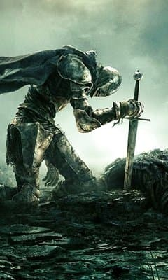

Welcome to the world of entertainment
Article
-
Гра з відкритим світом; Хідетака Міядзакі описував своє розуміння цього терміну як «великий відкритий простір», де гравці вільні з самого початку вирушити в будь-яку локацію. Ігровий персонаж може пересуватись по відкритому світу верхи на коні. Невід'ємну частину гри складають бої з унікальними босами.
ELDEN RING
-
Resident Evil Village — відеогра жанру survival horror, розроблена та видана Capcom. Десята з основної частини серії Resident Evil та продовження Resident Evil 7: Biohazard. Гра була анонсована на презентації PlayStation 5 у червні 2020 року. Реліз відбувся 7 травня 2021 для Microsoft Windows, PlayStation 4, PlayStation 5, Xbox One та Xbox Series X/S. У Resident Evil Village протагоніст попередньої гри, Ітан Вінтерс, у пошуках своєї викраденої дочки потрапляє в занедбане румунське село. Йому доводиться протистояти тамтешнім чудовиськам, разом з тим розкриваючи таємниці своєї дружини Мії та минуле корпорації Umbrella.

RESIDENT EVIL 8
-
The Dark Pictures Anthology: House of Ashes , також відомий просто як House of Ashes (укр. Будинок з Попелу) — це інтерактивна драма і відеогра в жанрі survival horror, розроблена Supermassive Games та опублікована Bandai Namco Entertainment . Це третя частина антології із вісьми запланованих «Темні картини» після «Людина з Медану» та «Маленька Надія» . Сцени прийняття рішень у грі, яких є кілька, можуть істотно змінити траєкторію сюжету та змінити стосунки між головними героями. Завдяки такому вибору будь-який з п'яти головних героїв може померти назавжди.
THE DARK PICTURES
-
Гра є адаптацією настільної рольової гри Cyberpunk 2020, її події відбуваються на п'ятдесят сім років пізніше у вигаданому місті Найт-Сіті, Каліфорнія, надаючи відкритий світ з шістьма різними регіонами. Гравці беруть на себе роль найманця Ві, стать і зовнішність якого налаштовуються за бажанням. На одному з завдань Ві стає мимовільним свідком убивства глави корпорації, що створила чип для перенесення свідомості. Вину за вбивство покладають на Ві та застрелюють. Але завдяки чипу Ві виживає і береться відновити справедливість, разом з тим шукаючи спосіб позбутися несподіваних побічних ефектів від носіння чипа.
CYBERPUNK 2077
-
Дія гри відбувається через 5 років після подій першої частини і через 25 років після глобальної катастрофи — пандемії, викликаної мутацією грибка кордицепсу на території колишніх Сполучених Штатів Америки. Згідно з сюжетом гри, основна частина серії буде мати місце в Сіетлі, а починатися в Джексоні. Головною героїнею є дівчина Еллі, якій на момент подій сиквела виповнилося 19 років. Джоел — протагоніст оригінальної частини, виступає персонажем другого плану й фігурує на початку[6]. Основною темою другої частини серії є ненависть і її подолання, на відміну від першої, де основна тема будувалася навколо любові, в конкретному випадку між Еллі та Джоелом.
THE LAST OF US 2
-
Days Gone — відеогра жанру жахів та пригодницького бойовика, розроблена компанією SIE Bend Studio й випущена компанією Sony Interactive Entertainment як ексклюзив для PlayStation 4. Відеогра була розроблена на гральному рушію Unreal Engine 4.
DAYS GONE
-
Shenmue III (яп. シェンムー III Сенму: Сурі:) — запланована третя частина серії Shenmue від відомого дизайнера Ю Судзуки. Ггра розробляється силами японських студій YS Net і Neilo, а також Монакською студією Shibuya Productions. Виданням гри займеться Sony Computer Entertainment. Знаходиться в розробці для Windows і PlayStation 4, і планується до виходу в грудні 2017 року. Офіційний анонс Shenmue III відбувся на конференції компанії Sony, в рамках виставки E3 2015.
SHENMUE 3
-
Гра продовжує історію позитивної кінцівки Metro: Last Light, прийняту за канон. Головний герой — Артем із групою вцілілих рейнджерів ордена «Спарта» розкривають, що поза Москвою також є вцілілі після війни. Вони покидають столицю на паротязі «Аврора» та їдуть далеко на схід шукати нове місце. Історія починається з суворої ядерної зими й відбувається протягом одного року. Інший персонаж гри, який повернувся з попередніх ігор і книги «Метро 2035», — Анна, яка тепер є дружиною Артема.
METRO EXODUS
-
Red Dead Redemption 2 — пригодницька відеогра у відкритому світі в стилі вестерн. Ігровий процес відбувається з виглядом від третьої, або від першої особи, а гравець керує Артуром Морґаном — авантюристом членом банди Ван дер Лінде. У грі представлений як самітний, так і мережевий режими.
RAD DEAD REDEMPTION 2
-
«God of War» (укр. Бог війни) — пригодницька відеогра, розроблена компанією Santa Monica Studio та випущена Sony Interactive Entertainment 20 квітня 2018 року для гральної консолі PlayStation 4, та 14 січня 2022 року для платформи Microsoft Windows. Вона стала восьмою грою в серії, і є продовженням відеогри God of War III. На відміну від попередніх ігор, які були засновані на давньогрецькій мітології, ця гра базується переважно на скандинавській мітології. Головними героями є Кратос, колишній грецький бог війни, та його молодий син Атрей. Після смерті другої дружини Кратоса та матері Атрея, вони подорожують світом, аби виконати для неї обіцянку — розсіяти її прах на найвищій вершині дев'яти світів. Кратос тримає своє неспокійне минуле в таємниці від Атрея, який не знає про його божественну природу. По дорозі вони зустрічають монстрів і богів нордичного світу.
GOD OF WAR